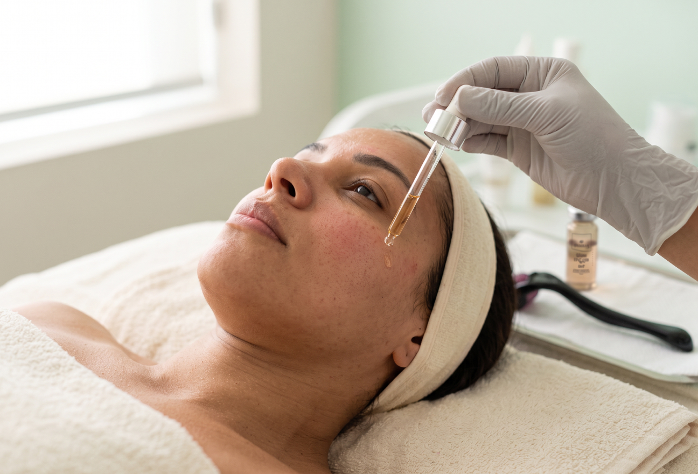

DRUG DELIVERY · AMPOLA ESTÉRIL
Sérum Epigen EXO P
Dermatologia regenerativa com tecnologia de Exossomos e PDRN, para a regeneração celular da pele.
Apresentação: Caixa com 10 ampolas de uso externo e único - 2ml cada.
Falar no WhatsAppPOR DENTRO DA FÓRMULA
Composição e função.

Exossomos
Comunicação intercelular que leva informações de células saudáveis para restaurar as células danificadas.

PDRN
Regeneração celular, auxiliando na reparação da pele de dentro para fora.

Hexapeptídeos botox-like
Contribuem para a redução de rugas, com uma ação similar ao botox.
Ativos
Exossomos, PDRN, Fatores de Crescimento (peptídeos nanoencapsulados obtidos por engenharia genética), Hexapeptídeos “botox-like”, Niacinamida, Sodium PCA e Silício Orgânico.
MECANISMO
Como age.

Baseado na dermatologia regenerativa, com tecnologia de Exossomos e PDRN, o Epigen EXO P age diretamente na regeneração celular, auxiliando na reparação da pele de dentro para fora. Sua ação se dá por meio da comunicação intercelular, que transporta informações de células saudáveis para restaurar as células danificadas, estimulando a produção de colágeno e elastina. Isso resulta em uma melhora significativa na elasticidade, hidratação e firmeza da pele. O Epigen EXO P é um potente bioestimulador que promove o rejuvenescimento e melhora a textura e a qualidade geral da pele. Esse processo reduz a inflamação, a vermelhidão e o estresse oxidativo, ajudando a combater os sinais do envelhecimento. Além disso, o Epigen EXO P acelera a cicatrização, atenua marcas de acne e poros dilatados, e contribui para a redução de rugas, com uma ação similar ao botox. Também fortalece a barreira cutânea, protegendo a pele contra danos ambientais e os efeitos nocivos dos raios UV. Auxilia ainda na uniformização do tom da pele, deixando-a mais saudável e rejuvenescida. É indicado para o tratamento de condições inflamatórias da pele, como acne, rosácea, psoríase, vitiligo, dermatite, melasma, entre outras.
ESTUDOS E MATERIAIS
Estudo de caso para download.


Sérum Epigen EXO P
Dermatologia regenerativa com tecnologia de Exossomos e PDRN, para a regeneração celular da pele.
Falar no WhatsAppAtendimento direto com a equipe Anna Pegova.